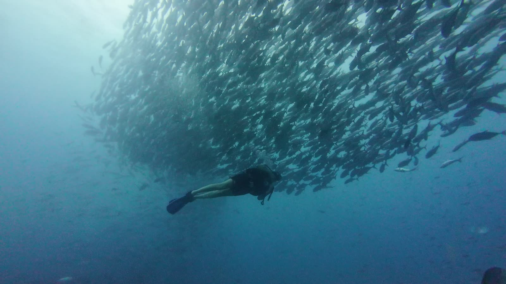
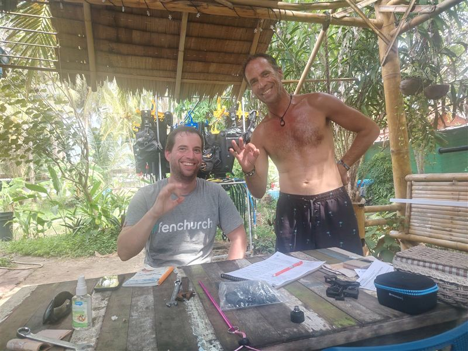
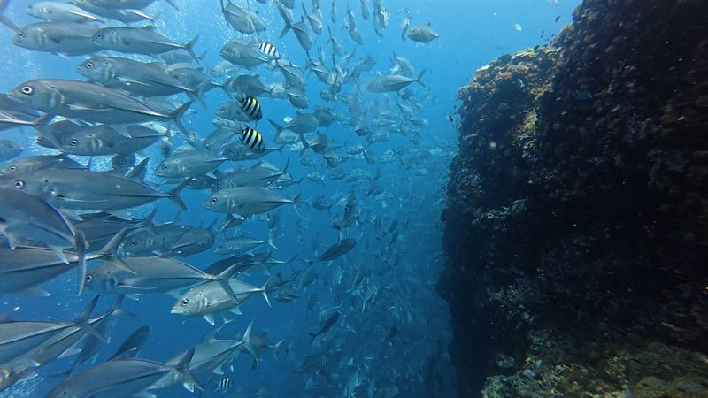

Deep
Bis 30 Meter mit deinem Instructor: deine Luft planen, Tiefenrausch erkennen und zusehen, wie die Farben mit der Tiefe verblassen.
Bis Weihnachten fahren wir um 8:00 ab: Treffpunkt am Pier von Chaloklum um 7:45, zurück gegen 13:30–14:00.Warum?


Prüfung besprochen, Kurs geschafft
Auf einen Blick
Im Open Water lernst du tauchen. Im Advanced Open Water fängst du an, es zu genießen: bessere Tarierung, unter Wasser selbst den Weg finden, sicher tiefer tauchen und auf deine Umgebung achten statt auf deine Ausrüstung.
Der Kurs
Deep und Navigation gehören zu jedem Advanced-Kurs. Die anderen drei sind meist Perfect Buoyancy, Fotografie und Fischbestimmung — die, die bei deinen nächsten Tauchgängen den größten Unterschied machen.
Bis 30 Meter mit deinem Instructor: deine Luft planen, Tiefenrausch erkennen und zusehen, wie die Farben mit der Tiefe verblassen.
Kompass und natürliche Navigation, damit du vorausschwimmen kannst und immer zurück zum Boot findest.
Feinabstimmung von Blei und Atmung, damit du mühelos schwebst — weniger Luftverbrauch und kein Kontakt mit dem Riff.
Die Grundlagen der Unterwasserfotografie: nah rangehen, ruhig bleiben und das Licht nutzen.
Die Fische des Golfs von Thailand erkennen lernen, damit jeder Tauchgang spannender wird.

Sail Rock · hier finden die meisten Tauchgänge statt
Wo du tauchst
Die meisten Advanced-Tauchgänge finden an Sail Rock statt, dessen Wände auf 40 Meter abfallen — perfekt für den Deep-Tauchgang.
Von Januar bis Mai, wenn die Bedingungen dort meist besser sind, tauchen wir auch an Koh Ma oder Little Sail Rock. So schließt du den Kurs ab, nachdem du an mehr als einem Platz getaucht bist — das ist schon an sich eine gute Übung.
Wer kann mitmachen
Du brauchst keine zusätzlichen Tauchgänge oder Erfahrung: Die vier Tauchgänge deines Open-Water-Kurses reichen. Viele unserer Schüler machen beide Kurse direkt hintereinander und haben am Ende fünf Tage getaucht.
Fragen
12.500฿ pro Person, mit allem inklusive: dein SSI-Instructor, die komplette Ausrüstung, die Bootstage mit Mittagessen und Getränken und dein Brevet. Der Verleih einer Unterwasserkamera kostet 600฿ extra.
Zwei Tage, mit fünf Abenteuertauchgängen.
Ja. Anfang 2026 hat SSI den Kurs Advanced Adventurer in Advanced Open Water umbenannt. Die Stufe, die du mit vier Spezialkursen und 24 geloggten Tauchgängen erreichst, heißt jetzt Advanced Specialty Diver.
Sie sind gleichwertig: fünf Abenteuertauchgänge, bei beiden mit Deep und Navigation, und ein Brevet bis 30 Meter. Jeder Verband erkennt das Brevet des anderen an.
Nein. Die vier Tauchgänge deines Open-Water-Kurses reichen, und du kannst am nächsten Tag mit dem Advanced anfangen.
Immer Deep und Navigation. Die anderen drei sind meist Perfect Buoyancy, Fotografie und Fischbestimmung. Wenn dich etwas anderes interessiert, sag es uns bei der Buchung.
Bis 30 Meter, oder 21 Meter für Taucher zwischen 12 und 14. Um auf 40 Meter zu gehen, ist der nächste Schritt die Deep Specialty.
Der Specialty-Diver-Kurs mit Deep und Nitrox, mit dem du den Grund von Sail Rock auf 40 Metern mit längeren Grundzeiten betauchen kannst, und der Rescue-Diver-Kurs.
Schick uns deine Daten auf WhatsApp — allein oder direkt nach deinem Open Water — und wir bestätigen deinen Platz.
Noch nicht brevetiert? Am besten startest du mit dem Open-Water-Kurs, oder entdecke alle unsere Kurse.